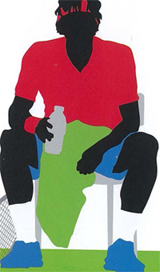
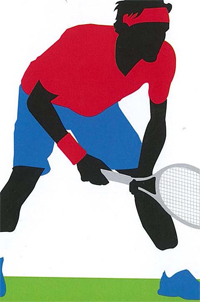
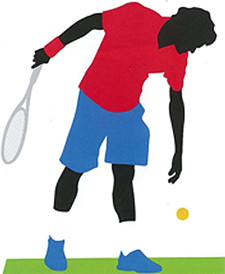
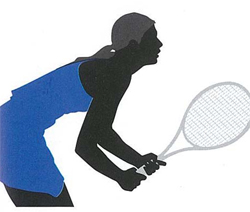
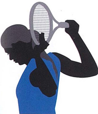
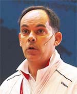

Confidence and Relaxation¶
Miguel Crespo, Paul Lubbers¶

The time between points and games is critical in maintaining self-confidence. On a changeover, confident thoughts could include: "I will maintain my winning strategy."
The intermittent nature of competitive tennis creates "dead time" during match play---in fact this is the majority of time in any match. This places high demands on the cognitive aspects of the player's performance.
One of the key components is self-confidence. Self-confidence is the degree of certainty that the player has in his or her ability to execute a skill or series of tasks. How much better will I play when I'm confident? Self-belief is one of the best predictors of competitive success.
Building and maintaining appropriate thoughts before, during, and after a match is therefore one of a player's main goals. These can be increased with psychological training.
But to do so, players need to first become aware of their thoughts. Only then can they regulate them, particularly during critical moments.
But how many players actually have this awareness? Many are the victims of unconscious negative thought loops.
There are a variety of strategies to overcome these negative loops. They include thought stoppage, positive body language, goal setting, the use of imagery, focus on process rather than outcome, and the ability to increase and decrease intensity. (To read Jim Loehr's article on moving from negative to positive, link.)
Self-talk--the use of positive and motivational key words---is one of the most effective strategies. Research has shown that negative self-talk is associated with losing.
Research has also shown that increasing execution-related thoughts (for instance, "watch the ball until impact") decreased outcome-related thoughts (for instance, "win this point"). The conclusion is that those players who believe in the utility of positive self-talk win more points than players who do not.

Video demonstration — the original video for this article was hosted on TennisPlayer.net.
Focusing on process not outcome can overcome negativity with thoughts such as: "Keep your rhythm. Solid return."
Research also suggests that self-confident players have enhanced concentration, more fighting spirit, and that these characteristics in turn have positive flow-on effects to physical endurance, goal setting, performing better in adversity, having lower cognitive and somatic anxiety levels and lower total mood disturbance from negative events such as losing a match.
When comparing winners to losers, it has been found that winners attribute their performance more to internal or personal factors such as effort and less to internal debilitating factors such as lack of practice.
Some players naturally focus on their performance rather than the outcome of the match, and therefore can feel satisfied irrespective of the result. These conclusions are entirely consistent with the statements made by Roger Federer after his comeback from injury to win the Australian Open.
Relaxation
How important is it to relax during a match? Do relaxation strategies enhance performance?

Winners tend to have increased execution related thoughts such as "I will attack with my second serve."
Most tennis players want to win, whether competing for money, trophies, championships, rankings, or for a team or personal achievement. This is part of the thrill of competition, but often this is also the root of stress and anxiety.
Studies on anxiety have concluded that anxiety is detrimental to performance as it typically causes players to become more vulnerable, and that winners have significantly lower cognitive anxiety prior to competition than losers.
Even the world's best players have admitted to how, at times, they are overcome by nerves. The source of this stress is the belief that you do not have the ability to meet the demands of competition-for instance, winning the match, or playing their best tennis in front of others.
This perception triggers negative self-talk, doubt, anxiety, lack of confidence and feelings of fatigue. This in turn triggers a deep physiological response where the player's heart rate increases, blood pressure rises, and muscle tension increases.
Significant reductions in somatic anxiety (physical) and cognitive anxiety (mental), and significant increases in self-confidence, can be realized with proper training.

Centered breathing between points decreases heart rate and stress.
The first step to relaxing is for the player to become self-aware by monitoring both the causes and symptoms of the stress.
For many players, a solution is to learn to view the symptoms of stress as positive and part of the routine for competition. Another technique is to learn to control both breathing and muscle tension.
Many players use the time between points and games as an opportunity to employ centered breathing to regain and maintain emotional control during high-pressured situations.
Centered breathing is a method of bringing your attention to your breathing. This has several beneficial physiological effects. (To read Jim Loehr's seminal article on Breathing, link.)

Players can learn progressive muscle relaxation both on and off court.
Deep or diaphragmic breathing decreases your heart rate and stress levels by maximizing oxygen levels in your blood (which causes the heart to beat slower, expending less energy), increases oxygen saturation in the cells and lowers your blood pressure. This in turn reduces the stress hormones in your system. All of these physical reactions are beneficial to your state of mind, calming you and enabling you to relax and make better playing decisions.
In addition to breath control, many players use progressive relaxation, which involves the alternate tensing and relaxing of specific muscles. This helps the player to learn to feel the tension that is built up in the muscles and then let go of it. With practice, players can also learn to do this during competition.
Tennis players are "relaxed" when they are mentally and physically free of the tension and anxiety that produces thoughts such as: "I need to win this match" or "I cannot double fault."
Players in a relaxed state generally report feelings of tranquility and calmness combined with lack of conscious thought. Through the implementation of breath control, progressive relaxation, and the development of on-court routines, players can gain higher levels of concentration and focus, which in turn lead to more success and a more enjoyable competitive experience.

Miguel Crespo is the research officer at the International Tennis Federation Development Department, Spain. He oversees the ITF's coach education program and has coauthored and edited many ITF publications.
Paul Lubbers is the Director of Coaching Education and Performance for USTA Player Development. Paul also manages and directs activities related to Strength and Conditioning and Medical Services for Player Development Training Centers.